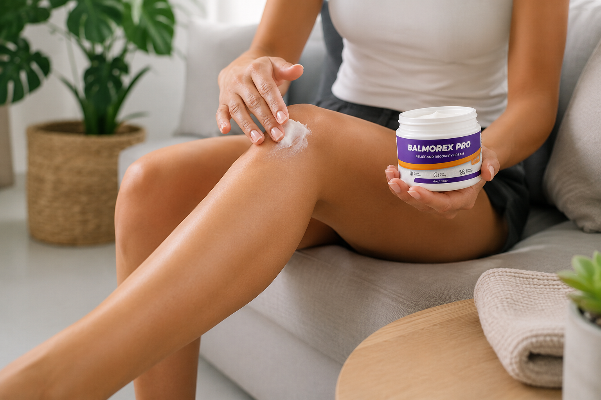

This independent review provides an overview of Balmorex Pro, including its listed ingredients, manufacturer information, customer experiences, and frequently asked questions to help you make a more informed decision before exploring additional product information.

Balmorex Pro is a topical cream presented by its manufacturer for personal care use. This independent review covers ingredients, product details, and manufacturer information.
According to the manufacturer, Balmorex Pro contains a blend of botanical extracts and topical skincare ingredients designed for external use. Visitors can explore ingredient information, product details, customer feedback summaries, and frequently asked questions throughout this review.
This website provides general educational information only and does not replace the information provided by the manufacturer, product packaging, or advice from qualified healthcare professionals.
Before exploring any wellness product, it's important to understand what it is, how it's intended to be used, and the information provided by the manufacturer. Below is a quick overview of Balmorex Pro to help you make a more informed decision.
Balmorex Pro is a topical cream presented by its manufacturer for inclusion in a personal care routine.
The manufacturer recommends applying the cream according to the instructions provided on the product packaging for regular daily use.
This review includes an overview of the ingredients listed by the manufacturer, together with additional educational information to help you better understand the product.
SabkiShop provides independent product information, educational content, and customer experience summaries to help visitors learn more before exploring the manufacturer's website.
According to the manufacturer, Balmorex Pro contains a blend of botanical extracts and topical skincare ingredients. Below is an overview of some of the key ingredients listed for informational purposes.
MSM is a naturally occurring sulfur-containing compound that is commonly included in wellness products and topical formulations.
Arnica is a botanical ingredient that has traditionally been used in topical products and personal care formulations.
Hemp seed oil is an ingredient commonly used in topical skincare formulations.
Boswellia is a plant resin that has been widely used in traditional herbal preparations and wellness products.
Ginger root is a botanical ingredient frequently included in herbal formulations and topical products.
Aloe vera is a botanical ingredient commonly found in skincare and cosmetic formulations.
Magnesium sulfate is a mineral ingredient that is often included in topical wellness and personal care products.
Shea butter is a commonly used ingredient in skincare and cosmetic products.
Menthol and camphor are commonly used in topical creams to provide cooling and warming sensations during application.
The following information is based on publicly available details provided by the manufacturer at the time this review was prepared.
Balmorex Pro is marketed by its manufacturer as a topical cream for everyday use. Product details, ingredients, pricing, availability, and recommendations are managed by the manufacturer and may change over time.
SabkiShop provides an independent review based on publicly available information and does not manufacture, sell, or distribute Balmorex Pro. For the latest product details, ordering information, and support, visitors can continue to the manufacturer's website using the links provided on this page.
The table below summarizes general information about Balmorex Pro based on publicly available manufacturer information and educational resources. It is provided for informational purposes only.
| Product Name | Balmorex Pro |
|---|---|
| Product Type | Topical Cream |
| Intended Use | Presented by the manufacturer as a topical skincare product for everyday use. |
| Application | External use only. Follow the manufacturer's directions provided with the product. |
| Selected Ingredients | Contains botanical extracts and topical skincare ingredients listed by the manufacturer. |
| Information Source | Manufacturer information and publicly available educational resources. |
| Availability | Available through the manufacturer's website. |
Maintaining an active lifestyle involves many daily habits. The suggestions below are general wellness tips and are not specific to any particular product.
Gentle daily movement such as walking or stretching is commonly recommended as part of general healthy lifestyle habits
Drinking enough water throughout the day supports many normal body functions and is an important part of everyday health.
A varied diet that includes fruits, vegetables, whole grains, and healthy fats can contribute to overall wellness.
Getting adequate sleep each night supports recovery, energy levels, and general wellbeing.
Customer comments published by the manufacturer and other publicly available sources describe a variety of individual experiences. As with any product, opinions differ, and individual experiences should not be considered typical or guaranteed.
Publicly available feedback may mention the cream's application process and texture. Users should follow the manufacturer's directions for use.
Publicly available reviews may include comments about texture, consistency, packaging, and overall user impressions. Individual experiences and opinions may vary.
Note: Customer experiences are subjective and may not reflect the experience of every user. This summary is provided for informational purposes only and should not be interpreted as evidence of specific results or outcomes.
The manufacturer recommends following the usage instructions provided with the product. The overview below summarizes the general application process for informational purposes only.
Apply the cream according to the manufacturer's directions on clean, dry skin.
Gently massage the cream into the skin until it has been evenly absorbed.
Follow the manufacturer's recommended usage instructions as part of your personal daily routine.
This review was prepared using publicly available information to help visitors better understand the product.
Product descriptions, ingredient listings, usage directions and other product information were reviewed from the manufacturer's published materials.
General ingredient information was compiled from publicly available educational resources describing commonly used botanical and skincare ingredients.
Customer comments referenced in this review are summarized from publicly available information provided by the manufacturer. Individual experiences may vary.
SabkiShop is an independent product information website dedicated to helping visitors learn more about wellness and lifestyle products before visiting the manufacturer's website.
Our reviews are provided for educational purposes only. We do not manufacture, sell, or distribute the products featured on this website, and we do not provide medical advice or treatment recommendations.
We encourage visitors to review official product information, read labels, and make decisions based on their own research and circumstances.
Below are answers to some of the most common questions about Balmorex Pro. This information is provided to help visitors better understand the product before exploring additional manufacturer information.
Balmorex Pro is a topical cream presented by its manufacturer as a product intended for everyday use. This page provides an independent overview of the product, its listed ingredients, and general information available to consumers.
The manufacturer recommends applying the cream according to the instructions provided with the product. Always read and follow the directions on the product packaging before use.
Balmorex Pro is produced and distributed by its manufacturer. Product details, availability, and additional information are provided by the manufacturer.
No. SabkiShop is an independent product review website. We provide educational information and may direct visitors to the manufacturer's website through affiliate links if they wish to learn more.
Our goal is to help visitors better understand products by providing independent summaries, ingredient information, frequently asked questions, and educational content before they continue to the manufacturer's website.
This review includes an overview of the ingredients listed by the manufacturer. For the most current ingredient list, always refer to the product packaging or the manufacturer's website.
No. Individual experiences vary depending on many personal factors. The information on this page is intended for general educational purposes and should not be interpreted as a guarantee of any specific outcome.
After reviewing the information on this page, visitors who wish to explore additional product details may continue to the manufacturer's website for the latest information provided by the manufacturer.
If you'd like to explore additional product information, including the latest manufacturer details, listed ingredients, product availability, and other information, you can continue using the link below.
Continue to Product Information